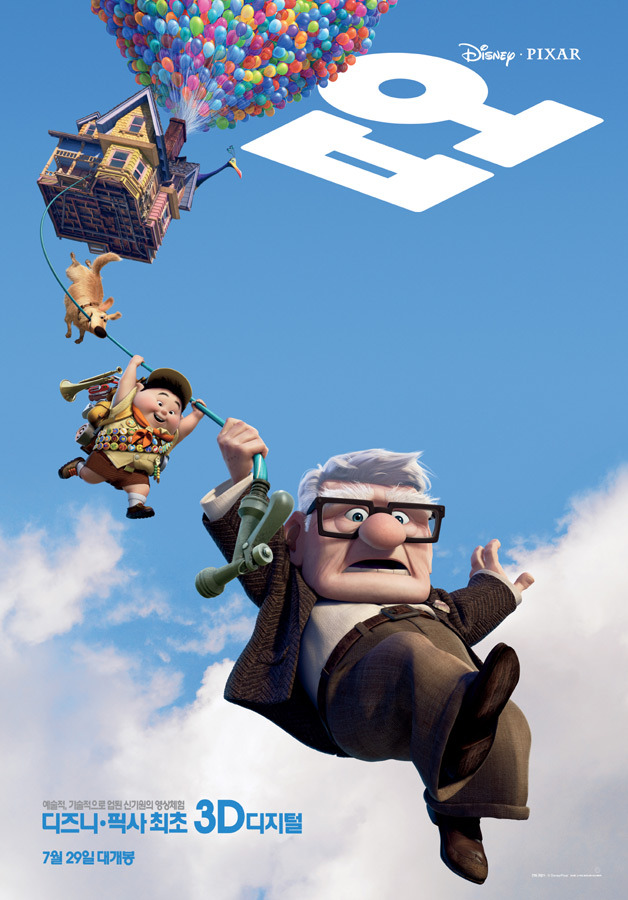

애니메이션 업(UP)을 보다

아내의 임신으로 액션과 스릴은 자제하고 주로 애니메이션을 보게 되었다. 이번주는 그래서 회사에서 빌려온 업(UP) 을 봤다.
인생의 황혼기가 왔을 때 새로운 모험을 찾아 떠나는 이야기이다. 영화 초반에 한 사람의 인생을 주~~~욱 그려주는데 뭐랄까... 남의 이야기 같지가 않다;;
영화 초반에 결혼 중, '모험' 을 위해서 저금통에 돈을 모으지만 현실에 부딪쳐 계속 저금통을 깨어서 돈을 쓰게 된다... 그리고 다시 저금통에 돈을 모으기를 반복..... 마지막으로 나이가 들어서 돈으로 모험을 떠나려 했을 때 아내는 병으로 쓰러져버린다.
나는 지금 내 인생을 제대로 모험하고 있을까....? 내 인생의 버킷 리스트는 하나씩 채우고는 있나... 되돌아보게 만드는 애니메이션이다.